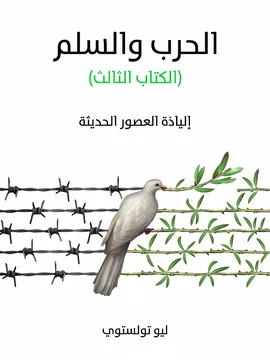

الحرب والسلم (الكتاب الثالث): إلياذة العصور الحديثة

قراءة عربية أصلية محددة النطاق في الصفحات 17 إلى 22 من ملف PDF المرتبط، وليست تلخيصا كاملا للكتاب. نناقش ما تدعمه هذه المقاطع فقط.
ما الذي سبب حرب ١٨١٢؟
يفتتح تولستوي الكتاب الثالث بالفصل الأول «تحديد المسئولية»: في الأشهر الأخيرة من عام ١٨١١ حشدت أوروبا قوات عظيمة، وفي الثاني عشر من حزيران ١٨١٢ اجتازت جيوش أوروبا الغربية الحدود الروسية وبدأت الحرب؛ أي إنه وقع حدث مخالف للعقل مخالف لكل طبيعة الإنسان، ارتكبت فيه الملايين من الرجال بعضها في حق بعض عددًا كبيرًا من الكبائر والمخادعات والخيانات والسرقات والنهب والحرائق والقتل، تعجز وثائق كل محاكم العالم عن تقديم أمثلة مماثلة خلال قرون، دون أن يعتبر فاعلوها أنها جرائم بشعة. ثم يسأل: ما الذي سبب هذا الحدث الأعجوبي؟ يظهر المؤرخون بتأكيد خالص أنها إهانات الدوق أولدنبورج وخرق الحصار البري وطمع نابليون وعناد ألكسندر وأخطاء الدبلوماسية، وكان نابليون يعزو منشأ الوقيعة إلى دسائس بريطانيا كما أعلن في سانت هيلني، وألقى أعضاء مجلس النواب البريطاني المسئولية على طمع الإمبراطور.
زاوية وحدود القراءة
قراءة موجزة من ص ١٧ إلى ص ٢٢ من أصل ٥١٢ صفحة، تعرض الفصل الأول من الجزء الأول، لا الكتاب كاملًا.
الطبعة والقراءة
هذه النسخة من الكتاب صادرة ومتاحة مجانًا من مؤسسة هنداوي بشكل قانوني؛ حيث إن نص الكتاب يقع في نطاق الملكية العامة تبعًا لقوانين الملكية الفكرية.
تنزيل PDF المجاني ↓ القراءة والمصدر الرسمي ↗